Partly. Over six months, while CME futures trade, depth near the mid holds up in volatile minutes, but most quotes at the touch are gone within a second. Metaorders (runs of same-side orders from one account) move the price 2 to 7 times more than one sweep of the typical displayed book would, about 2 to 3.5 times from $50k up, and depth falls to two fifths in the daily CME futures break.
Thanks to Hydromancer for the Reservoir and node data.
The code for every chart and check is open source on GitHub.
Five things the order book says
Large trades arrive as runs of smaller orders, so this page measures the run, not each order.
Definition. A metaorder is one account's run of consecutive taker orders on the same side, with no gap longer than 5 minutes; liquidations are left out. Each taker order in the run is a child order, and a metaorder can have just one. Its impact is the mid 0.25 s after its last fill against the mid just before its first.
Why it matters. A trader working a large position rarely sends it as one order, and each child order alone hides the cumulative move. The price impact, impact decay and execution-shape sections below use the metaorder as their unit. The comparison with the book asks how far one order of the same size would move the price if it swept the displayed top 20 levels at once.
Caveats. The 5-minute gap is a modeling choice, and impact estimates move with it. An account is an address, not a firm, and orders from different accounts are never joined. Execution shapes are computed only for metaorders with 4 or more child orders.
The figure is a schematic with made-up numbers; it shows the definitions, not data.
Terms. bps: basis points, hundredths of a percent. Touch: the best bid or ask. Block: one Hyperliquid block, about 70 ms. Taker: the order that crosses the spread; maker: the resting order it fills. Markout: how far the mid moves after a fill, from the fill price, positive in the taker's favor. ES: CME E-mini S&P 500 futures. Q/V: metaorder size over the day's volume. Y: the prefactor in impact = Y × daily volatility × (Q/V)0.5. OFI: order flow imbalance at the top of the book. HMM: hidden Markov model. ARI and Jaccard: agreement between two clusterings (1 = identical). Kaplan-Meier: a survival estimate that accounts for orders that fill or stay open. TWAP: an order split evenly over time. Mid: halfway between the best bid and ask. Tick: 0.1 index points. Sessions, in New York time: cash hours = 9:30 to 16:00 on US trading days; overnight = the other hours ES trades; daily break = 17:00 to 18:00 Monday to Thursday; futures closed = weekends and holidays. CI: confidence interval; brackets are 95% intervals unless marked 90%. FIFO: first in, first out. UMAP and HDBSCAN: a 2-D projection and a clustering method.
analysis analysis/impact/build.py · chart charts/metaorder_explainer.py
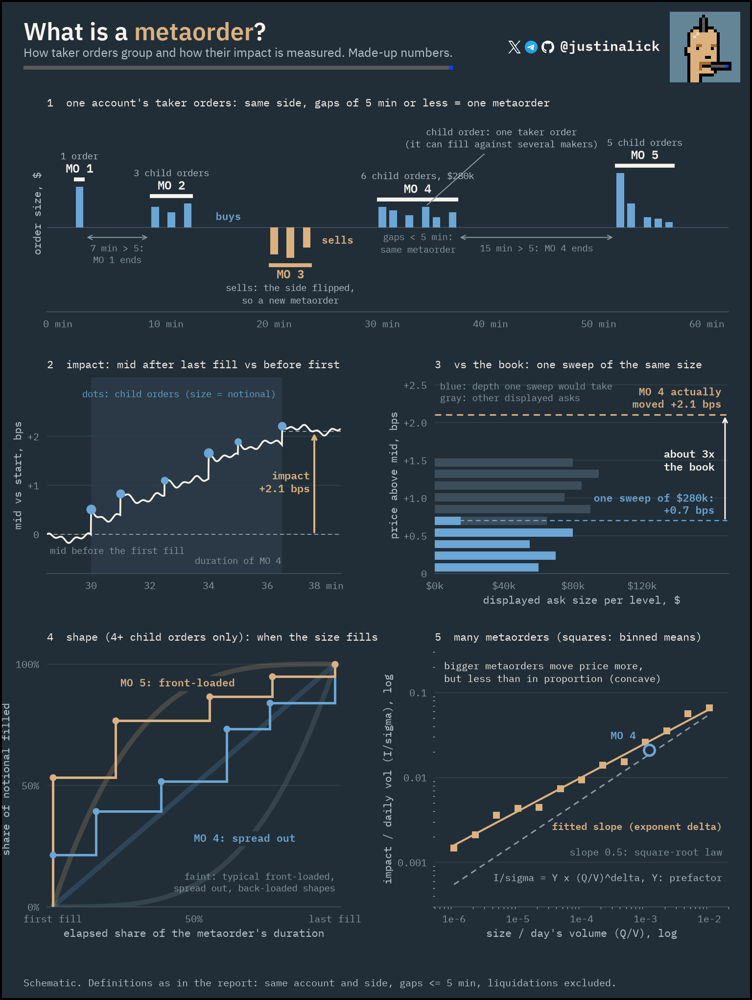
Six months are not one market: depth more than doubled into July, and quoting got faster.
Finding. Median depth within 10 bps in US cash hours was $7.5M in May, $18.1M in July (2.4x) and $12.1M in September, then up again to $15.6M in October. Taker volume peaked in June at $500M per US trading day. The top-3 maker share by account (sub-accounts not merged) fell from about 40% in spring to 30% in July and was back at 41% in October. Quoting got faster: the share of at-touch orders cancelled within 1 s rose from 44% in late April to 70% in June, then 66% in October. The taker markout per order at 1 minute (mid after the order's last fill against its average fill price, liquidations left out) moved between -0.23 bps (June) and +0.13 bps (late April).
Caveats. April (Apr 25 to 30) and October (Oct 1 to 24) are partial months. Cash-hours values use US trading days only. Merged maker shares apply today's declared sub-account links to every month. Pooled over the six months the cancel shares reproduce the survival chart exactly, and an independent SQL recompute matches the monthly depth, taker volume, fill share and re-placed share.
analysis analysis/monthly/ · chart charts/monthly.py · check checks/studies/monthly_check.py
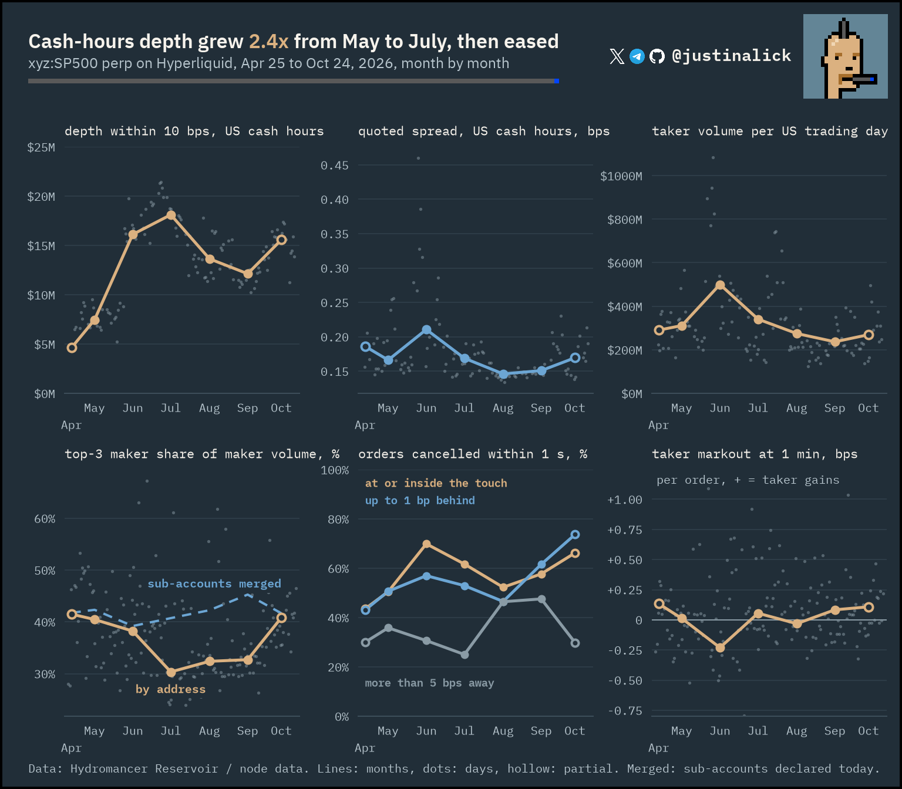
The daily CME break carries about two fifths of the depth of futures hours, and weekends about a fifth.
Finding. Liquidity runs on the clock of CME S&P 500 futures (ES), not the US cash session. Over the six months, median depth within 10 bps is $13.7M in cash hours, $11.4M overnight, $4.6M in the daily futures break (0.38x, about two fifths of futures-open depth) and $2.7M while futures are closed on weekends and holidays (0.22x, about a fifth). The second chart shows the same data as one line over the week: it drops every weekday at 5pm ET when CME futures break for the day, and on Fridays for the weekend.
Caveats. Depth nets out partly filled orders and is within 2% of the exchange's one-minute snapshots 98.9% of the time. Those snapshots only reach about 3 bps from mid, so depth from 3 to 10 bps rests on the replay alone. The week chart uses 27 weeks and leaves out the four US holidays in the window (May 25, Jun 19, Jul 3 and Sep 7).
run ./run.sh analysis heatmap · analysis analysis/heatmap/depth_check.py · chart charts/heatmap.py, charts/depth_week.py · check checks/spotcheck/heatmap_depth_check.py
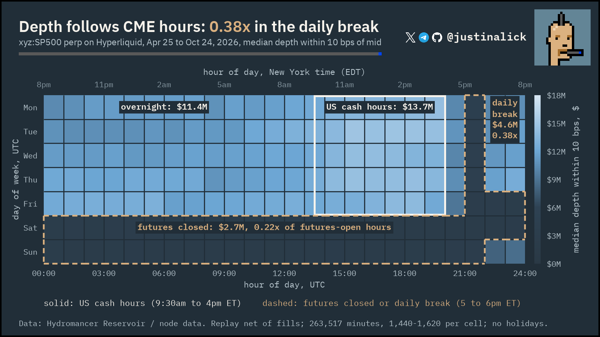
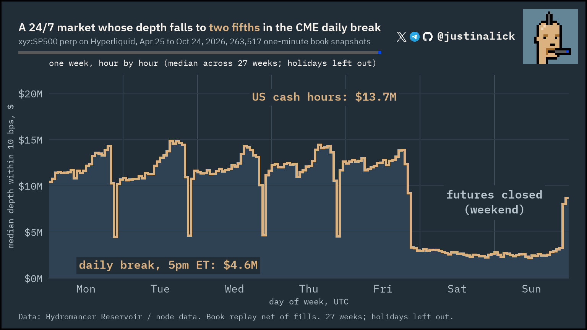
One session flag captures the book's regime; more states add noise.
Finding. The HMM finds one real regime, and it is the CME clock. The thin state ($2.9M within 10 bps, 0.34 bps spread) covers 99.1% of weekend and holiday minutes and 94.6% of the daily CME break in the 3-state fit; its two deep states ($11.7M and $12.7M, 0.14 and 0.17 bps) cover futures-open hours. In the 2-state fit, session alone reproduces the split in 93.8% of minutes, and the split holds on each half of the window on its own (ARI between the half-window fit and the full fit: 0.83 for each half).
Caveats. The third state only separates calm from active minutes at similar depth (5.5% against 13.3% realized volatility) and is unstable between window halves (ARI 0.86 and 0.42 for the two halves). Session matched 99.5% of minutes in an earlier two-week sample (Oct 8 to 21); it matches less often here because some thin minutes fall inside futures hours, mostly overnight. 27 weekends and four holidays; two holidays fall next to a weekend, so there are 29 separate closures.
run ./run.sh analysis regimes · analysis analysis/regimes/ · chart charts/regimes.py · check analysis/regimes/verify/
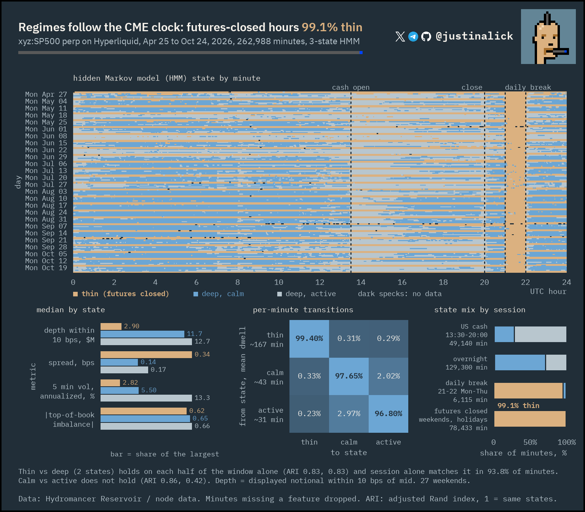
Thin books here come from the clock, not from volatile minutes, except while futures are closed.
Finding. Across hours, depth and volatility rise together (correlation of logs +0.43 over 4,388 hours), as both follow the CME clock. Relative to each hour's typical depth and to its own session that day, volatile minutes carry about the same depth while futures trade: -1.8% in cash hours (90% CI -3.2% to -0.5%) and +0.3% overnight (-0.7% to +1.3%). While futures are closed, the most volatile minutes carry 12% less depth than the calmest (-19% to -6%, over 29 closures).
Caveats. Each gap compares the most and least volatile tenth of minutes (15-minute realized volatility), relative to the hour's typical depth over the window and to the same session that day; the daily break is left out. CIs are a bootstrap over days, and over closures for the futures-closed bucket. Depth and volatility both come from the replayed book.
run ./run.sh analysis depth_vol · analysis analysis/depth_vol/, analysis/offhours/offhours_depth.py · chart charts/depth_vol.py · check checks/spotcheck/depth_vol_verify.py
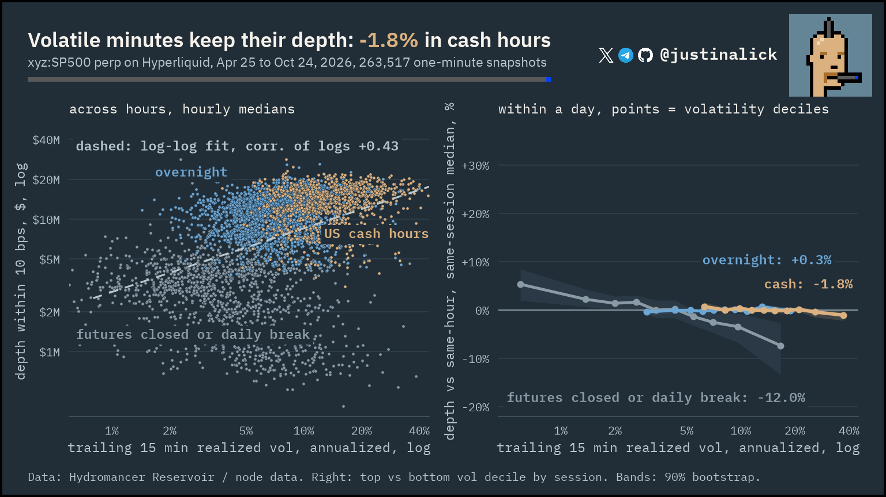
When volatility rises, quoted spreads widen while depth holds, unless futures are closed.
Finding. Relative to the typical level for that UTC hour over the window and to that day's level, the most volatile tenth of minutes while CME futures are open has a median time-weighted quoted spread 17% wider than the calmest tenth (day-bootstrap 90% CI +15% to +19%), while depth within 10 bps of mid is unchanged (-0.6%, 90% CI -2.2% to +0.9%). While futures are closed or in the daily break, volatile minutes are thinner as well as wider: spread +89% (+67% to +114%), depth -13% (-19% to -7%).
Caveats. Spread is time-weighted between one-minute snapshots from the replayed book; an independent recompute reproduces every gap. Minutes in which the mid did not move for the whole 15-minute window have zero volatility and are left out. 178,437 futures-open and 83,981 futures-closed or break minutes. Depth here uses the same baseline as the spread (hour, then day) and counts the daily break as closed, so it differs slightly from the depth vs volatility section, which compares within each session and day and leaves the break out.
run ./run.sh analysis vol_spread · analysis analysis/vol_spread/ · chart charts/vol_spread.py · check checks/vol_spread/check_vol_spread.py
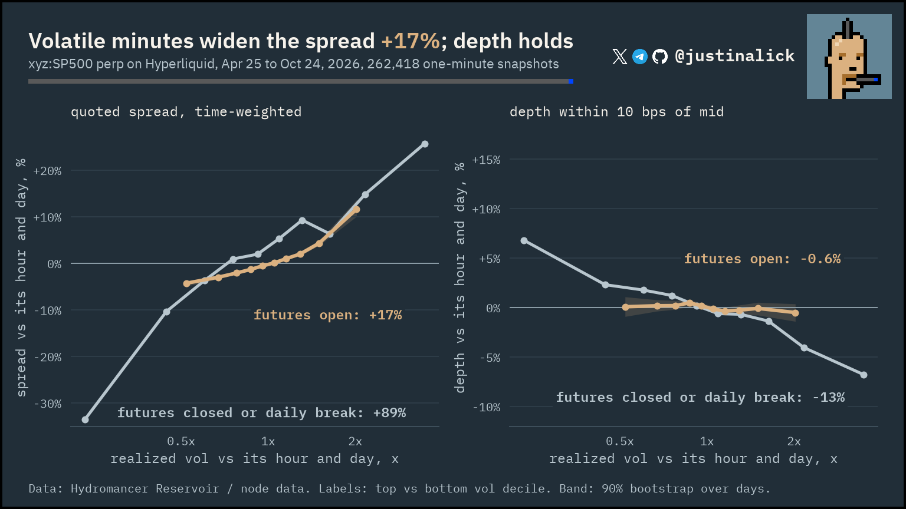
About a quarter of maker volume comes from three accounts; merging declared sub-accounts makes it about a third.
Finding. The top three maker accounts supply 25.9% of maker volume over the six months pooled, and 36% on the median day (middle 80% of days: 29% to 47%). Merging declared sub-accounts into their master raises the pooled share to 34.9% and the median day to 42%; on 81 of 183 days the merge moves the daily share by 5 points or more.
Caveats. Daily shares sit above the pooled share because the leading accounts rotate (see maker rotation below). Only sub-account links declared on Hyperliquid were merged, and today's links are applied to earlier days. Accounts that could be looked up cover 92.9% of maker volume. 18,701 maker accounts, $44.6B of maker volume.
run ./run.sh analysis concentration · analysis analysis/concentration/, charts/concentration_cache.py · chart charts/concentration.py · check checks/spotcheck/verify_concentration.py
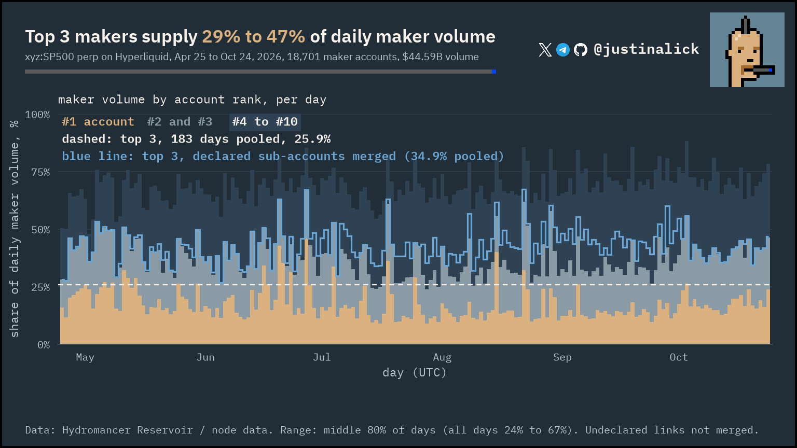
The same few maker groups lead most weeks, and one has led every week since late June.
Finding. Ranking maker groups (declared sub-accounts merged) by maker volume each week, the week-to-week rank correlation of the top 20 is 0.93 at the median, and on average fewer than one new group enters the weekly top 3 (0.69 per week). The largest group, with 14.7% of maker volume over the window, has ranked first every week for the last 17 weeks. By address, the weekly top-3 share sits well below the merged share from late June to early October, as the leading groups spread volume over several addresses.
Caveats. Groups use today's declared sub-account links for every week; undeclared links are not merged, and a group is not a firm. Groups are labeled by pooled volume only; no address is shown. An independent SQL recompute reproduces every weekly top-3 share and the rank statistics.
analysis analysis/maker_rotation/rotation.py · chart charts/maker_rotation.py · check checks/studies/rotation_check.py
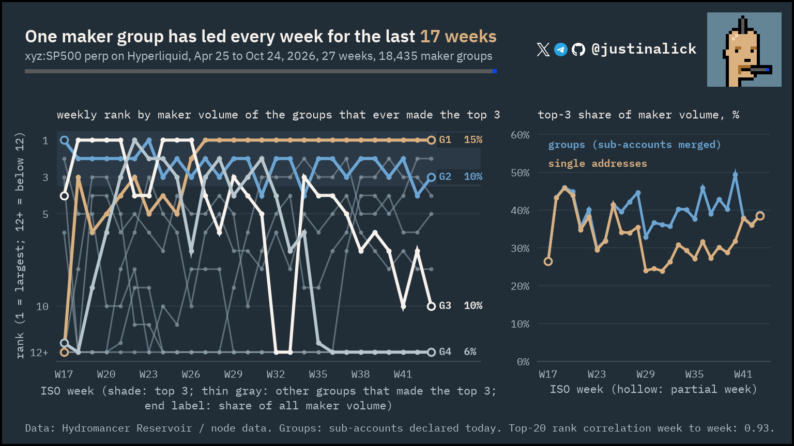
Near the touch, most quotes are gone within a second.
Finding. 60% of orders at or inside the touch and 57% of orders up to 1 bp behind it are cancelled within a second, against 42% at 1 to 5 bps and 37% more than 5 bps away. 321.4M displayed orders from 24,103 accounts. Month by month, the share at the touch rose from about 44% in late April to 70% in June and was 66% in October.
Caveats. Blocks are converted to seconds with each day's own block time (70.5 ms on average). Orders with no measurable distance from the touch are excluded. Few orders fill or stay open, so censoring is small and the Kaplan-Meier shares sit close to the raw shares. Cancels include those made by the exchange (margin, self-trade, scheduled cancel-all), a small share.
run ./run.sh analysis survival · analysis charts/survival_cache.py, analysis/survival_viz.py · chart charts/survival.py · check checks/spotcheck/survival_verify.py
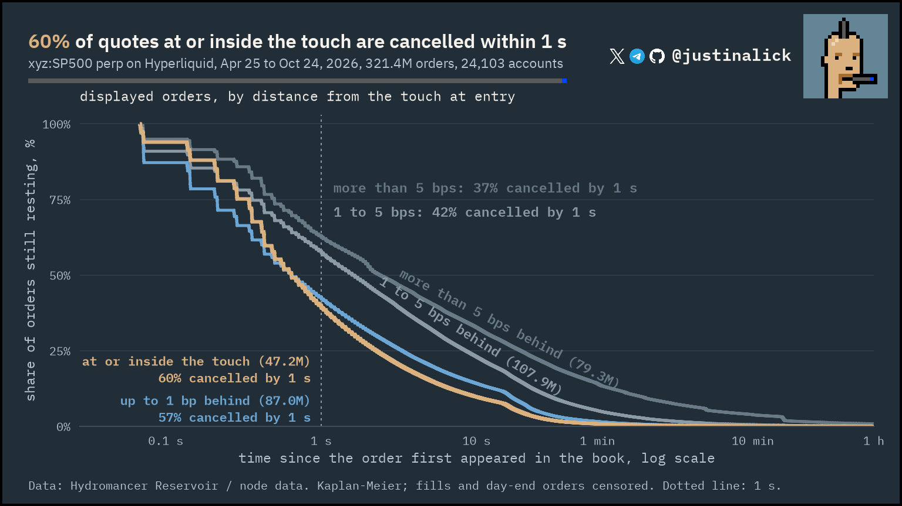
Fast cancels track moves of the touch: many look like quotes re-centering, not liquidity leaving.
Finding. Only 0.23% of the notional of 321M rested orders ever filled ($18.9T displayed over the six months). 45% of the 382M cancels are replaced in the same block by the same account and side (17% identical, 13% price only, 13% price and size, 1% size only); price-only amends move 1 to 3 ticks (1 tick = 0.1 index points) in 58% of moves toward the touch and 54% away. After the opposite touch moves, near-touch orders are 2.0 to 3.7 times as likely to be pulled within 1 s as with no move (32% against 9% after a favorable move of 2 or more ticks, that is, the opposite best price moving away from the order). More pulls follow favorable moves than adverse ones, which fits quotes re-centering.
Caveats. Displayed lifetime is partly an outcome, since filled orders stop resting when they fill. Cancels include orders cancelled in the block they were placed, which never displayed, so they outnumber the 321M rested orders; displayed notional counts each re-placed order again. A native modify and a cancel plus new order look the same in these data. Behavior only, not intent.
run ./run.sh analysis cancels · analysis analysis/cancels/ · chart charts/cancels_1.py, charts/cancels_2.py, charts/cancels_3.py · check checks/cancels/
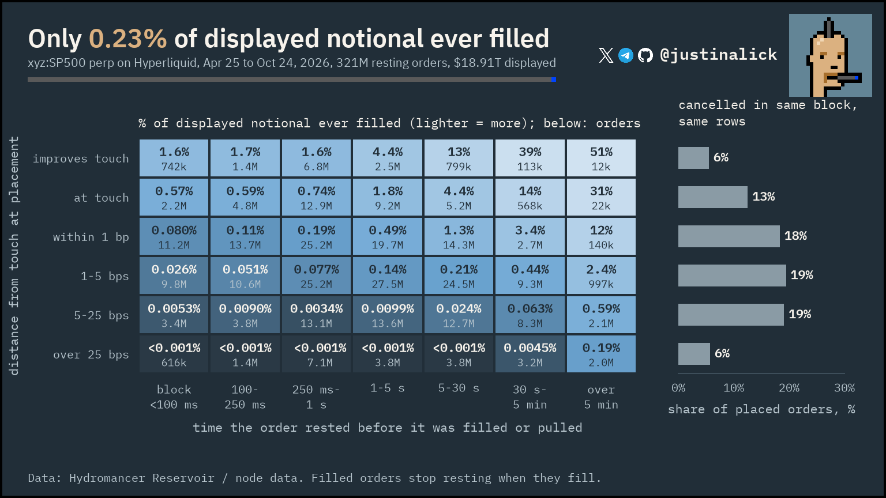
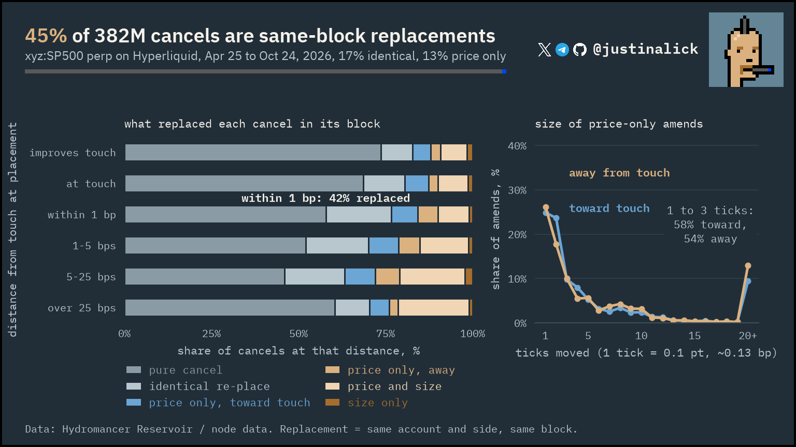
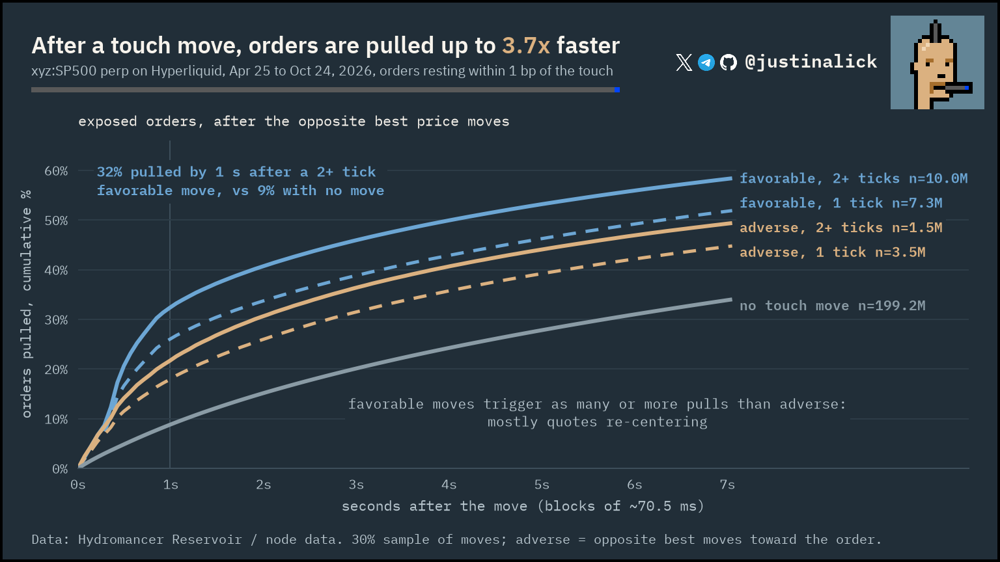
Through the summer, fewer cancels were re-placed in the same block, and price amends grew larger.
Finding. The share of cancels re-placed by the same account in the same block fell from 46% in late April to 35% and 34% in June and July, then rose to 60% in September. The median price amend (price-only and price-and-size amends) grew from 2 to 4 ticks in spring to 5 ticks in June to August and 7 in September, before falling back to 3 in October. Cancels per day rise with that day's volatility (rho +0.52 across US trading days, in logs).
Caveats. A native modify and a cancel plus new order look the same in these data. 1 tick is 0.1 index points. April and October are partial months. Behavior only, not intent.
analysis analysis/monthly/ · chart charts/quotes_monthly.py · check checks/studies/monthly_check.py
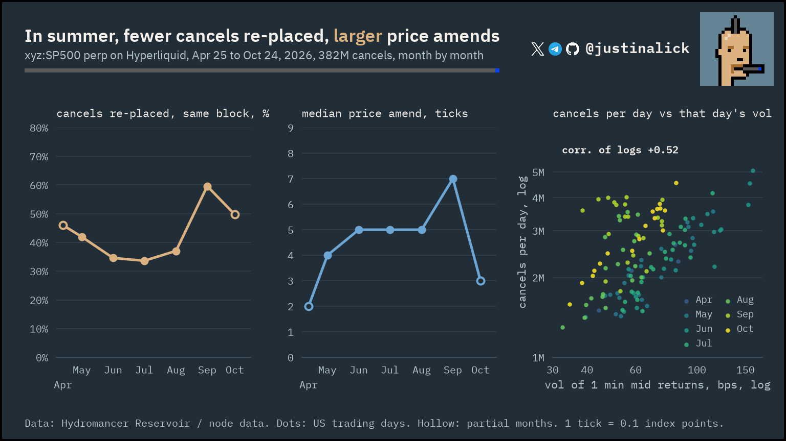
Orders that join a short queue get filled far more often than those behind a long one.
Finding. Orders that improve the touch get any fill 15.9% of the time and orders joining behind at most $5k 16.4%, against 2.7% for orders joining behind more than $250k. Holding own size at $5k to $15k, the drop is from 12.4% to 1.5%. 42.4M touch orders, Apr 26 to Oct 24, from a FIFO replay in which 97.8% of maker fills hit the replayed queue head.
Caveats. Most orders near the touch live under a second, so these odds mostly measure how fast makers cancel. Queue position is measured at entry only, and volatility is not controlled for. The first day of the window warms up the replayed queues and is left out.
run ./run.sh analysis queue · analysis analysis/queue_replay.py, analysis/queue_fill.sql, analysis/queue_km.py · chart charts/queue_fill.py · check checks/queue/
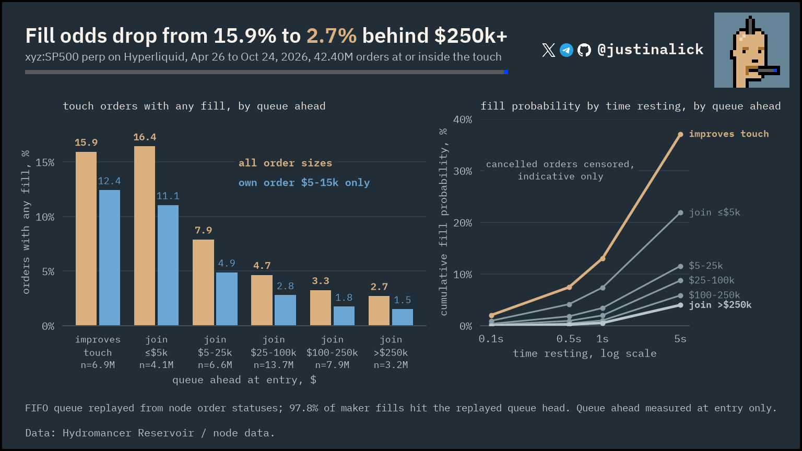
Small takers are early, but the fee is larger than the edge; large takers stay behind.
Finding. Markouts are measured from the fill price, positive when the mid moves the taker's way. Takers cross about 0.67 bps from the mid on average (-0.67 at the fill), and the mid then moves about that far their way: the pooled taker markout is -0.03 bps at 1 minute, +0.01 at 2 minutes and -0.01 at 5 minutes. Orders under $10k are ahead of the price in 58% of hours at 1 s and 72% at 10 s (+0.18 bps at 1 minute). Orders of $100k and over pay the most to cross (-1.32 bps at the fill) and are still about 0.3 bps behind after 5 minutes.
Caveats. All markouts are gross of fees. The average taker fee is 0.75 bps including builder fees (exchange fee alone 0.56 bps). Orders under $10k pay 0.89 bps, so their +0.18 bps at 1 minute is about 0.7 bp underwater after fees. The mid is taken as of every top-of-book change. An independent recompute (as-of joins on a rebuilt mid, maker legs read directly) reproduces every mean and every hourly value; its own bootstrap intervals differ by at most 0.01 bps. The hourly chart clips 1,212 of about 37,000 hourly values at ±1.6 bps, mostly thin hours of $100k+ orders; arrows count them.
run ./run.sh analysis markouts · analysis analysis/markout/rerun/ · chart charts/markouts.py, charts/markouts_violin.py · check checks/spotcheck/markout_rerun_verify_markouts.py
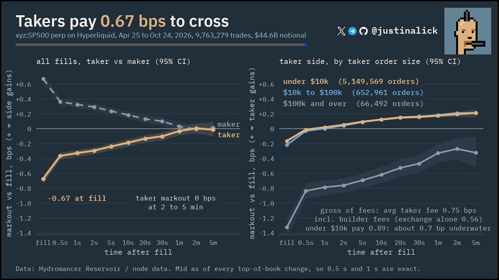
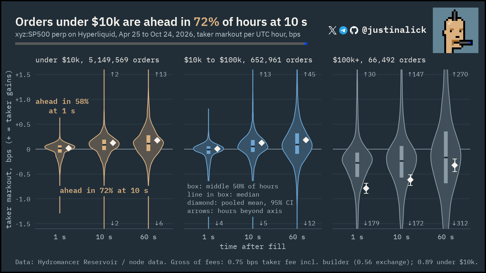
Metaorders move the price 2 to 7 times more than a sweep of the typical displayed book.
Finding. Impact is concave: the fitted exponent is 0.35 [0.33, 0.36] for metaorders and 0.42 [0.41, 0.43] for single taker orders. The prefactor Y is much higher for the largest taker (1.44) than for everyone else (0.55). Metaorders move the price about 2 to 7 times more than walking the typical displayed book: about 5 to 7x under $10k, about 3.4x at $50k to $300k and 1.8 to 2.3x at $450k to $1M.
What the comparison shows. The book figure is one order of the same size sweeping the displayed top 20 levels at once, with no refill, averaged over the exchange's one-minute snapshots across the window, not the book at the moment of each trade. It is a reference point, not an estimate of what sustained flow should move the price. Part of the gap is price drift in the trader's direction while they trade, not missing depth. Under $10k most metaorders are a single order, so the 5 to 7x there shows how far even one small order moves the mid; the gap from sustained flow is the 2 to 3.5x from $50k up. Metaorders are defined in the first section.
Caveats. The per-group exponents on the left panel are 0.41 [0.39, 0.43] for all other accounts and 0.35 [0.32, 0.38] for the largest taker. Single orders move the mid less than the book implies only from about $30k up. The fits use Q/V from 1e-5 to 1e-2 and bins with at least 30 metaorders; the pooled exponent sits at the low end of the two groups because they differ in level and size range. Q/V reaches only about 7e-3, small metaorders partly chase momentum, and Y moves from 0.55 to 0.91 with the metaorder gap rule alone (10 s to 30 min). Ratios use the 5-minute rule and include the largest taker; where the top 20 levels run out (19% to 38% of cases from $450k up) the book figure is left out, which inflates the ratio there.
run ./run.sh analysis impact · analysis analysis/impact/ · chart charts/impact.py · check checks/spotcheck/impact_verify.py
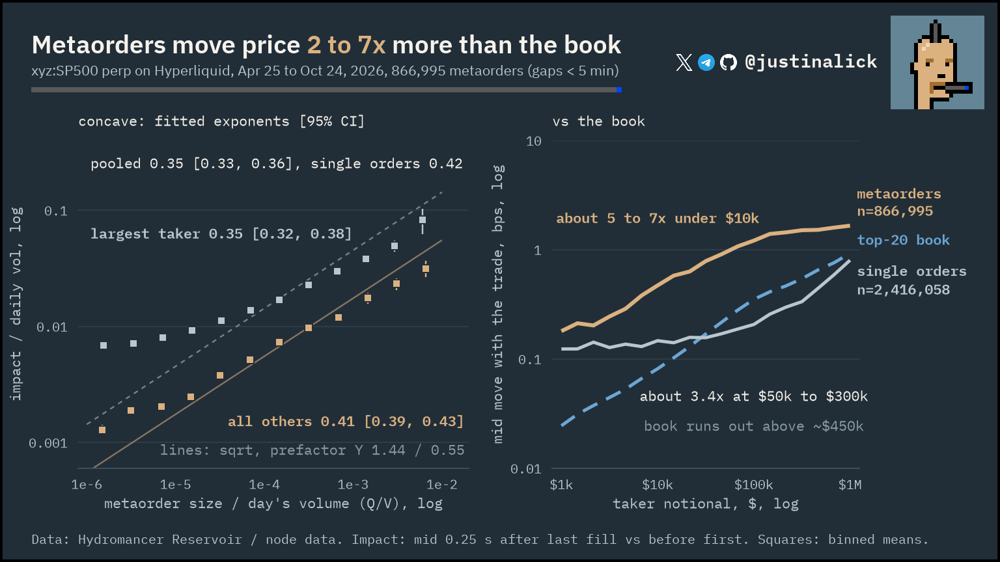
Large metaorders' impact mostly stays; small ones keep drifting their way after they stop.
Finding. Five minutes after the last fill of a metaorder of $1M or more, 85% of its impact is still there (95% CI 71% to 96%); about 0.3 bps reverts beyond what momentum explains. From $100k to $1M the impact holds (108%). Smaller metaorders keep moving the price their way after they stop: +0.09 bps beyond momentum at $1k to $10k and +0.08 bps at $10k to $100k, in line with small takers being ahead of the price (see fill markouts).
How it is measured. 396,738 metaorders after which the same account sends no taker order for 5 minutes, so the later mids are not moved by its own trading. The momentum control takes, for each metaorder, the same time of day 1 to 7 days away with a random side and a look-back equal to its duration, averages what the price did next by the size of that look-back move and the prior minute's trend, and subtracts it.
Caveats. Means are per metaorder (not notional-weighted); CIs are a bootstrap over days. Counting also the metaorders whose account trades again within 5 minutes, less of the impact stays (62% to 82%), often with that account then trading the other side. An independent SQL recompute reproduces the raw means and counts by size, the momentum control and every interval.
analysis analysis/impact_decay/decay.py · chart charts/impact_decay.py · check checks/studies/impact_decay_check.py
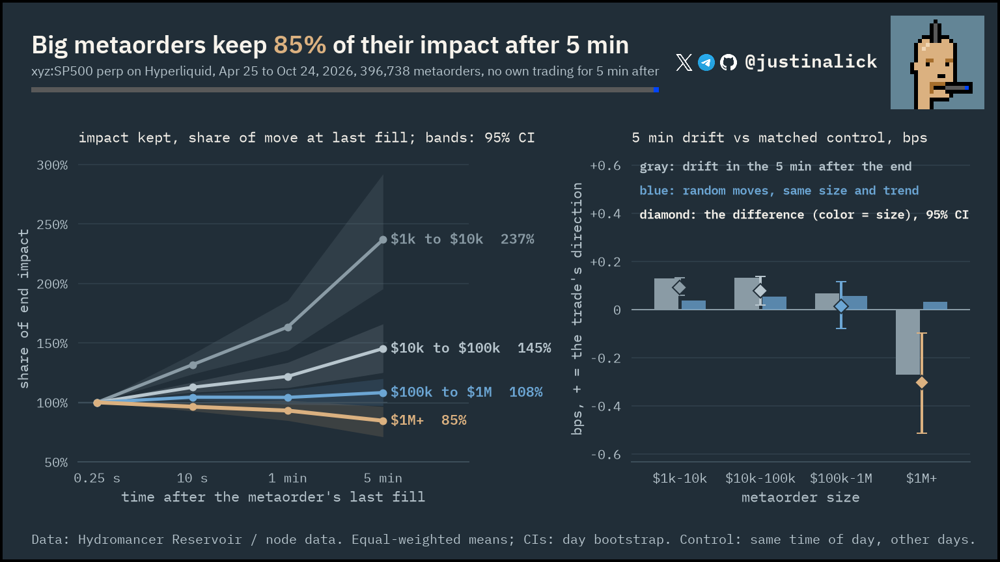
Execution shape separates metaorders; whether it changes their cost is tested next.
Finding. A 3-way split is the most stable across bootstrap refits (median ARI 0.92): front-loaded (53,760), spread out (113,118) and back-loaded (53,553), of 220,431 metaorders with 4 or more child orders. 89% of native TWAPs land in spread out. Impact Y for accounts other than the largest taker is 0.85 [0.77, 0.93] front-loaded, 0.54 [0.48, 0.60] spread out and 0.88 [0.75, 1.00] back-loaded, so spread out sits clearly lower.
Caveats. Y varies with child-order count as much as with shape (0.26 for single orders, 0.54 for 2 to 3). The split is less stable between the two halves of the window (ARI 0.57, against 0.69 for a 4-way split). 49% of clustered metaorders come from one account. Shapes need 4 or more child orders, and time shape cannot see icebergs.
run ./run.sh analysis metaorders · analysis analysis/metaorder_shapes/ · chart charts/metaorder.py · check checks/spotcheck/metaorder_shapes_verify.py
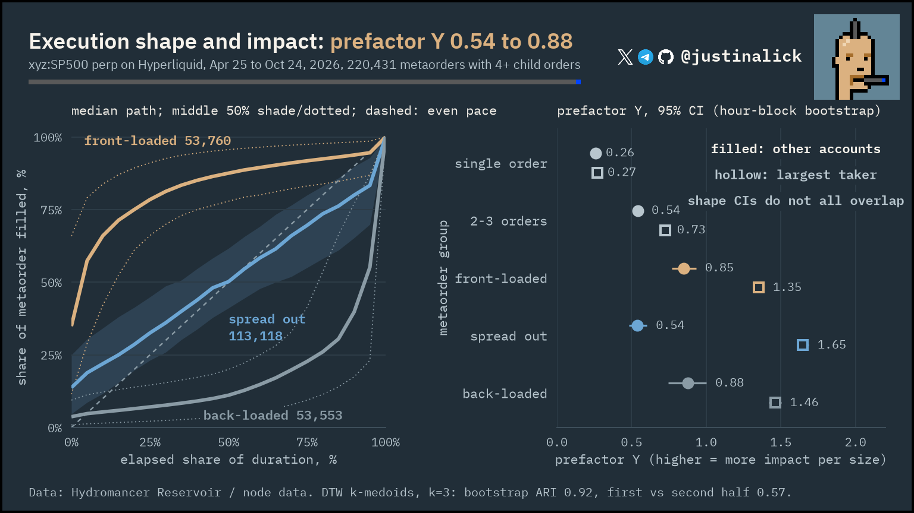
Spread-out execution looks cheaper than back-loaded across traders, but not clearly within the same account.
Finding. Matched on size relative to the day's volume, child-order count, duration, CME session and the prior minute's trend, spread-out metaorders pay 0.29 bps less in shortfall than back-loaded ones (95% CI -0.47 to -0.13) and about the same as front-loaded ones (+0.07, 0.00 to +0.15). Comparing an account with itself, the gap to back-loaded shrinks to -0.13 bps (-0.26 to +0.02), and spread out costs 0.20 bps more than front-loaded (+0.15 to +0.27). Most of the lower shortfall of spread-out execution comes from which accounts execute that way.
Caveats. Shortfall is the volume-weighted fill price against the mid just before the first fill. 113,330 metaorders with 4 or more child orders, the largest taker left out; CIs are a bootstrap over days. The within-account comparison only uses accounts that execute in more than one shape. An independent SQL recompute reproduces the raw means and the matched differences.
analysis analysis/shape_cost/shape_cost.py · chart charts/shape_cost.py · check checks/studies/shape_cost_check.py
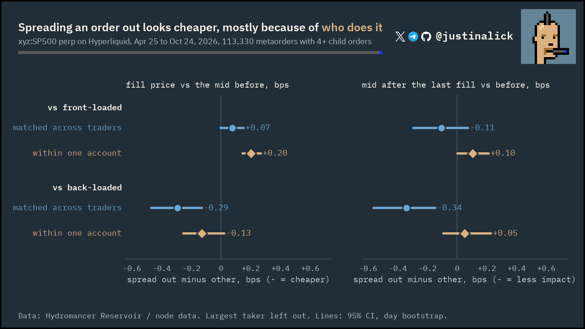
The largest taker leads the price only slightly; two smaller takers lead it more per dollar.
Finding. The largest taker (T1, 27% of taker notional) leads the price only slightly: +0.15 bps at 1 s, +0.33 at 10 s and +0.38 at 60 s, against -0.51, -0.38 and -0.19 for all other takers together. Its share is flat across futures-open hours (29% in cash hours, 28% overnight) and drops to 12% while ES is closed.
Caveats. Without ES prices, no lead-lag test against the futures was possible. Per dollar, two much smaller takers show larger markouts (+1.3 and +0.8 bps at 60 s). The 21 UTC bar is the daily CME break. 48.8% of taker notional sits in clusters of declared sub-accounts with more than one address.
run ./run.sh analysis taker_clusters · analysis analysis/taker_clusters/ · chart charts/taker_markouts.py · check analysis/taker_clusters/verify.sql
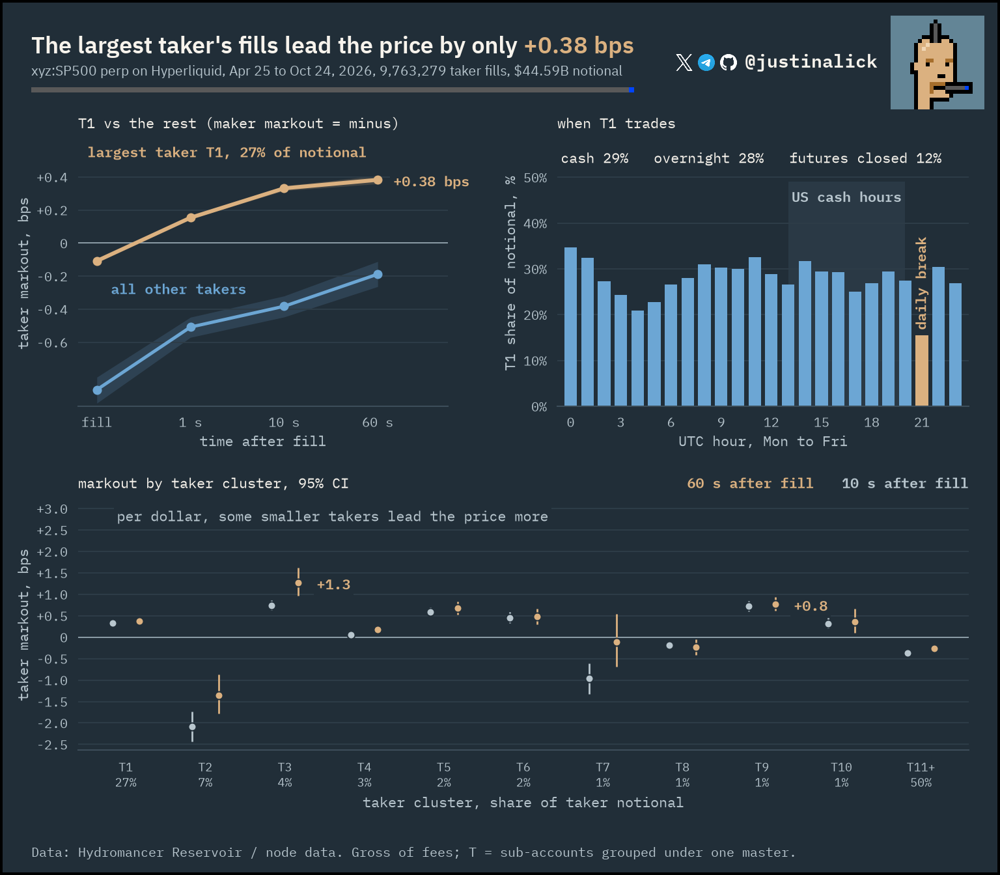
The takers that lead the price keep doing so month after month.
Finding. Correlating the 60 s markouts of the ten largest taker clusters between consecutive months, one month predicts the next well (r = 0.71, the average over six month pairs, 0.47 to 0.94). Six of the ten were ahead of the price in every month and two behind it in every month; the largest taker sits near +0.4 bps throughout. Takers other than the largest are behind the price on average at most hours of the week, slightly more in US cash hours (-0.22 bps) than outside them (-0.16 bps).
Caveats. Markouts are gross of fees and notional-weighted. A cluster is a group of declared sub-accounts, not a firm. Weekend hours are thin, and the thinnest tenth of hours is left blank. An independent SQL recompute (ASOF join on the replayed book) reproduces all 168 hourly values; an independent recompute also reproduces every monthly value and the month-to-month r.
analysis analysis/taker_hours/hours.py · chart charts/taker_hours.py · check checks/studies/taker_hours_check.py
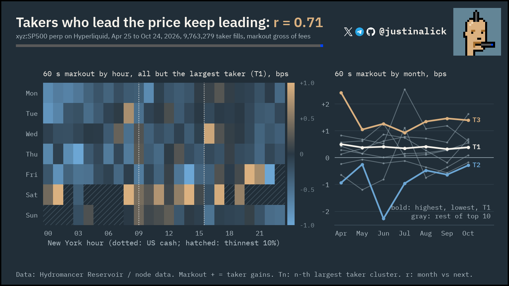
Order flow describes the move but does not forecast it at a size that survives spread and fees.
Finding. OFI explains same-bin price moves well but barely predicts the next one. With the slope refit every half hour, median same-bin R-squared rises from 21% at 1 s to about 62% at 1 min; pooled over the window, the 10 s R-squared is 46% in US cash hours against 16% outside. Out-of-sample next-bin R-squared is 1.4% at 1 s (against 0.5% for the lagged mid return alone), 0.5% at 10 s, and about zero from 1 minute on.
Caveats. Predicted moves are far below the half-spread plus fees, so nothing here is tradable. The 1 s edge is mostly speed: it falls to 0.3% with a 1 s delay. Walk-forward by day over 182 test days. The replayed top-of-book price matches the exchange's one-minute snapshots at least 99.4% of the time on every day, and the size on each side 98% of the time on the median day (64% on the worst day, Aug 22).
run ./run.sh analysis ofi · analysis analysis/ofi/ · chart charts/ofi.py · check checks/spotcheck/ofi_verify.py
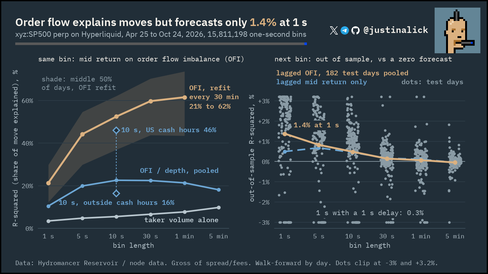
The discount to the oracle is a CME-hours effect; funding is small next to it.
Finding. The perp trades about 3 bps below the oracle only while CME futures are open: a median of -3.2 bps while ES trades against -0.05 bps over the 1,695 hours it is closed (Mar 18 to Oct 25 sample). The median premium is -2.5 bps and is negative in 78% of hours. Funding is small next to that: over the six months a constant long paid 0.25%, and over the longer public-API sample (Mar 18 to Oct 25) it collected 0.66%, about 1.1% a year.
Caveats. Deep discounts do not reliably predict a bounce. The most discounted fifth of hours was followed by +27 bps over 24 h, but that comes mostly from April and August; the non-overlapping daily test gives a correlation of -0.10 over 209 days (t = -1.47). Shorts pay longs only when the premium is below about -3 bps.
Different sample: Mar 18 to Oct 25, 2026 from the public API (5,291 funding hours; 5,014 hours with a 24 h forward return), not only the six-month window.
run ./run.sh analysis funding · analysis analysis/funding/ · chart charts/funding.py · check checks/funding/recompute.py
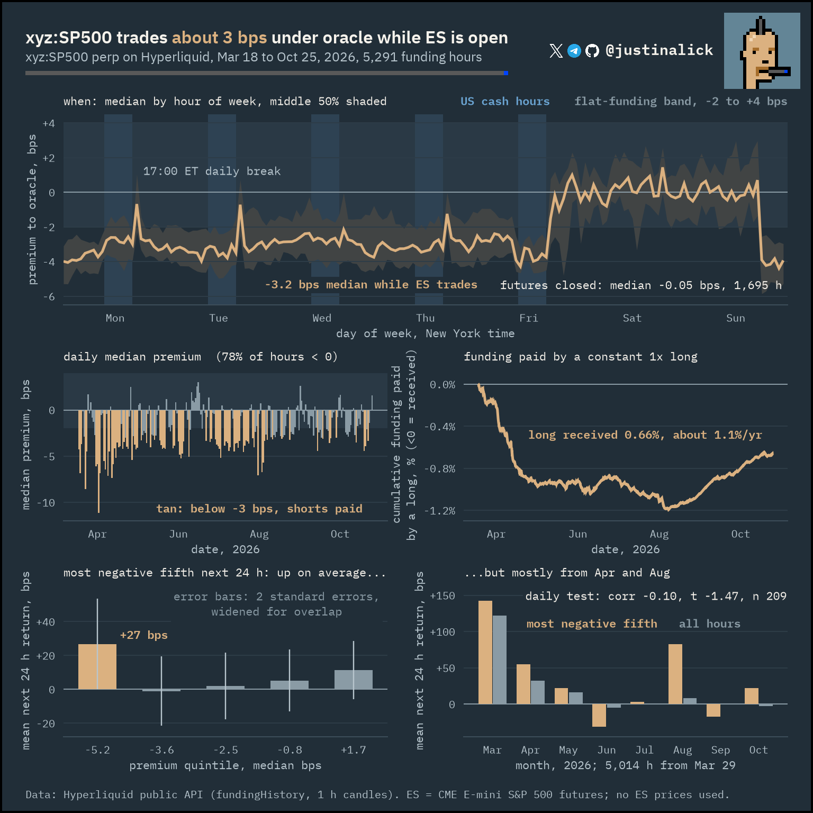
Clusters of accounts are stable across refits, but clusters found in shuffled data are just as stable.
Finding. 16 of 32 clusters come close to stable across 30 refits (mean Jaccard 0.7 or more), and the median bootstrap ARI is 0.90. But the same test passes for 9 of the 11 clusters found in shuffled data, where each feature is permuted on its own so no account is real (82% of clusters, against 50% for the real data). Stability across refits therefore does not show that a cluster is a real trader type. Descriptively, the stable real clusters are taker styles: small high-turnover API takers, stop and take-profit takers in US cash hours, one-way takers, TWAP users, builder-routed takers, plus one small group of slow post-only makers (55 accounts, 112 s median rest). The post-only maker block that accounts for 63% of these accounts' combined notional (1,186 accounts, 18 s median rest) does not split stably (Jaccard 0.43).
Caveats. The same pipeline on shuffled data finds 11 clusters, and the largest are as stable as the real ones (Jaccard 0.89 to 0.98), so neither islands nor stability alone is evidence of a trader type. 15,354 accounts with at least 30 fills. Cluster names are short descriptions of median features, not identities, and an account is not a firm. An independent recompute reproduces the real clusters' stability and runs the same test on the shuffled data.
UMAP axes have no units; they place accounts that behave alike close together, and UMAP can draw tight islands even in noise, which is why the shuffled-data panel is the control.
run ./run.sh analysis archetypes · analysis analysis/archetypes/ · chart charts/archetypes_v2.py · check checks/studies/archetypes_check.py
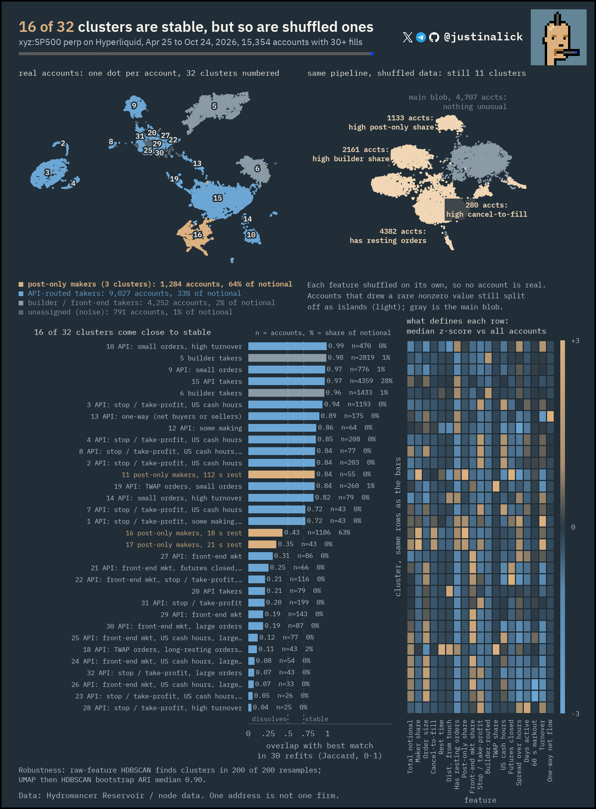
Fills and order statuses for the xyz:SP500 perp on Hyperliquid, Apr 25 to Oct 24, 2026 (183 UTC days), from Hydromancer Reservoir / node data; funding and oracle premium from the Hyperliquid public API, Mar 18 to Oct 25, 2026. The CME clock is computed in Chicago and New York time, so it follows daylight saving time and the US holidays in the window (May 25, Jun 19, Jul 3, Sep 7). The chain paused briefly about once a week, usually on Saturday mornings UTC while futures were closed, for about 33 minutes in all; those minutes are kept, and no section uses them on their own. The order book is replayed block by block (about 70 ms) from node order statuses and checked against exchange snapshots. Markouts use the mid as of every top-of-book change; confidence intervals are bootstraps over hours (markouts, impact fits) or over days (the other sections), as each section states. Headline numbers were recomputed with separate code; each section links its check. Accounts are addresses, not firms, and nothing here identifies one. The charts describe measured behavior, not intent.
Replicate it. All code is at github.com/justinalick/hypermirage (pinned to commit 7848f72); each section above links its own analysis and chart scripts, and most link an independent check script. Reservoir data is a requester-pays S3 bucket, and node data needs Hydromancer access; see the repo README.
Thank you to Hydromancer. This study would not exist without its Reservoir and node data: the fills and order book that most of these charts are built from.
git clone https://github.com/justinalick/hypermirage && cd hypermirage ./run.sh fetch # Reservoir fills + 1-minute L2 ./run.sh pipeline # per day: order lifecycle and block-by-block book replay ./run.sh analysis # every topic, or e.g. ./run.sh analysis markouts ./run.sh charts # the charts on this page, in out/ ./run.sh checks # independent recomputes of the published numbers
I pick the next public study from requests: ask for another market or a question about this one.
Also available for private work.

![X]()
![Telegram]()